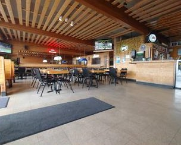
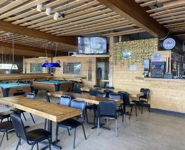
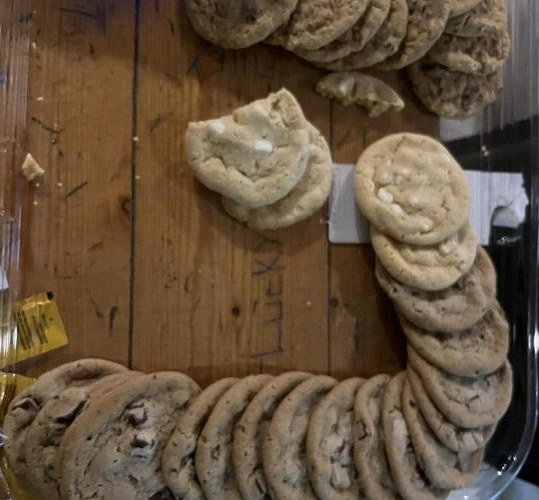

Best Deli Sandwich · Best of Flagstaff 2024
Locally owned sandwich shop on Milton Road
Bread baked daily, big sandwiches piled with meats, cheeses and fresh veggies, and hand-crafted beer. Flagstaff locals and NAU students have been coming in for decades for the Grand Rapids, the French Dip and the Crystal Veggie.
Take-out, catering, walk-in, and limited dine-in seating.

House favorites
Grand Rapids
Genoa salami, smoked ham, turkey, roast beef, bacon, avocado, cream cheese, cheddar and provolone on a white roll.
French Dip
Hot and toasted: thin-sliced lean roast beef and provolone with au jus. Also comes in a spicy version.
Crystal Veggie
Avocado, cream cheese, walnuts, tomato, cucumber, sprouts, plus cheddar, Swiss and provolone on wheat.
Visit
Hours
Open daily, 10:00 am – 5:00 pm
Holiday hours may differ.
Inside the shop

